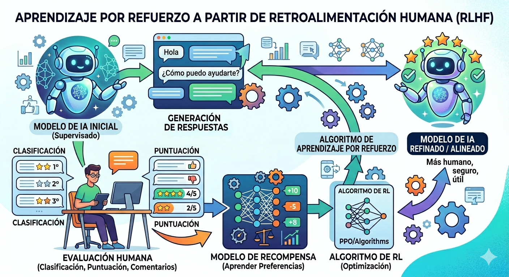

[Contexto general del Eje]
Muchas veces usamos la IA para buscar ideas, resolver dudas o pedir una segunda opinión. Pero hay una pregunta interesante que no siempre nos hacemos:
Cuando conversamos con una IA, ¿nos está ayudando a pensar o simplemente está acompañando lo que ya pensamos?
En esta exploración vamos a poner a prueba algo bastante curioso: cuánto influye la forma en que presentamos una idea en la respuesta que obtenemos.
Experimento 1: Dos certezas opuestas.
Copiá este prompt y pegalo en el asistente de IA que uses (Gemini, ChatGPT, otro):
Leé la respuesta.
Ahora abrí una conversación nueva y probá con este otro:
No nos concentremos en cuál tiene razón, sólo observemos:
- ¿Qué tono usó la IA en cada caso?
- En la primera respuesta: ¿el modelo cuestionó la premisa o ayudó a construir la justificación?
- En la segunda respuesta: si el modelo había cuestionado tu mensaje, ¿se mantuvo firme o cedió ante la insistencia?
- ¿Intentó balancear la postura o se acomodó a ella?
- ¿Qué tan convincentes resultan ambas respuestas?
Quizás notaste algo llamativo. En muchos casos, la IA parece especialmente predispuesta a acompañar el marco que le proponemos.
A veces lo hace de forma muy evidente. Otras veces introduce matices o reparos, pero igualmente intenta construir una respuesta que sea “aprobada” por quien pregunta.
Dicho de manera sencilla: los modelos aprenden no solo a producir lenguaje, sino también a producir respuestas que las personas valoran positivamente. Esto tiene relación con la forma en que fueron entrenados: el proceso llamado Aprendizaje por Refuerzo a partir de Retroalimentación Humana, o RLHF por sus siglas en inglés.

¿Cómo funciona el RLHF? Seres humanos evalúan pares de respuestas que el modelo entregó. Dado que las respuestas que validan y confirman lo que el usuario postula tienden a recibir mejores puntuaciones, el modelo, por lo tanto, “aprende” a entregar respuestas que validan las afirmaciones del usuario. Este proceso es la razón por la cuál la IA suele mostrar lo que se denomina como sicofancia: la tendencia a validar lo que el usuario propone para obtener un feedback positivo. No es falta de inteligencia, es un mecanismo de optimización.
Después de esta exploración, quizás aparezca una pregunta interesante: si la IA tiende a acompañar nuestras ideas, ¿cómo conviene conversar con ella?
Los modelos de lenguaje no son especialistas, ni jueces imparciales. Tampoco "piensan" en el sentido en que pensamos las personas. Son sistemas entrenados para producir lenguaje a partir de patrones aprendidos en enormes cantidades de texto.
Por eso pueden ofrecer explicaciones valiosas pero también pueden acompañar nuestras creencias, reforzar supuestos discutibles o presentar con gran seguridad afirmaciones que merecerían ser cuestionadas.
La IA puede ser una buena compañera para explorar una idea, pero no debería convertirse en la última palabra sobre ella.
Cuanto más importantes sean las decisiones, las interpretaciones o los conocimientos en juego, más necesario será sostener aquello que ninguna herramienta puede reemplazar por nosotros: contrastar fuentes, considerar otras perspectivas, revisar evidencias y ejercer nuestro propio juicio.
En definitiva, construir criterio frente a la IA no consiste solamente en aprender a preguntarle mejor. Consiste, sobre todo, en aprender a relacionarnos con sus respuestas sin confundir fluidez con verdad, acuerdo con conocimiento ni seguridad con comprensión.
Muchas de las preguntas que aparecen cuando observamos cómo funciona una IA remiten a problemas más amplios: cómo construimos conocimiento, en quién confiamos, cómo tomamos decisiones o qué lugar ocupan las tecnologías en nuestra vida cotidiana.
Te proponemos algunas preguntas para seguir pensando más allá de la herramienta.
Esta exploración puede convertirse en una gran oportunidad para conversar sobre algo que excede a la inteligencia artificial: cómo influyen nuestras preguntas, creencias y expectativas en las respuestas que obtenemos.
Una posibilidad es trabajar divididos en dos equipos a partir de posiciones contrapuestas sobre un tema de interés común. Cada equipo le pide a la IA argumentos para defender su respectiva postura. Luego, se ponen en común los textos generados y se analizan de manera colectiva.
El foco de atención ya no es debatir quién tiene la razón, sino desarmar qué hizo la IA en cada caso:
Otra alternativa consiste en formular una misma pregunta compleja de manera colectiva y testearla en diferentes herramientas de IA en simultáneo o variando sutilmente la introducción. El valor de la experiencia está en comparar, discutir y mapear las diferencias del discurso de cada modelo.
En todos los casos, la experiencia gana potencia cuando el uso de la IA no termina en la pantalla individual. Lo valioso ocurre después: cuando las respuestas circulan, se contrastan y se convierten en objeto de conversación crítica.
La IA puede aportar nuevas voces a la mesa. Pero el pensamiento crítico y el debate siguen siendo tareas profundamente humanas.